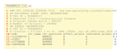

pgs-scoring-file.RmdPGS scoring files are the files provided by the PGS Catalog that allow you to compute polygenic scores for your samples. These files are hosted at the PGS Catalog FTP server: http://ftp.ebi.ac.uk/pub/databases/spot/pgs/scores/. They are labelled by their respective PGS Score ID (e.g. PGS000001.txt.gz).
Essentially, each scoring file contains variant identification, effect alleles and respective score weights. The file is formatted to be a gzipped tab-delimited text file. The file starts with an header that contains brief metadata about the score.

To get PGS scoring files you may either download them directly from the FTP server yourself or use the quincunx function read_scoring_file(). This function automatically downloads, unzips and reads both the header and the data as a data frame into R. Let’s look at an example: polygenic score “PGS000655”. You can use directly the PGS score ID as the argument to the source parameter in the function read_scoring_file(), and it will translate it to the corresponding URL, download the file and import the data as data frame with appropriate data types.
my_pgs <- read_scoring_file(source = "PGS000655")
length(my_pgs)
#> [1] 1
names(my_pgs)
#> [1] "PGS000655"The returned object of read_scoring_file() is a list of lists. The outer list runs (potentially) over several PGS IDs if you asked for more than one. So we start by extracting the first (and in this case only) score by name:
PGS000655 <- my_pgs[['PGS000655']]
names(PGS000655)
#> [1] "metadata" "data"Now, each inner list comprises two elements: metadata and data. The metadata part contains the information retrieved from the initial comment block of the file:
dplyr::glimpse(PGS000655$metadata)
#> Rows: 1
#> Columns: 7
#> $ pgs_id <chr> "PGS000655"
#> $ reported_trait <chr> "Non-alcoholic fatty liver disease"
#> $ original_genome_build <chr> "GRCh37"
#> $ number_of_variants <int> 10
#> $ pgp_id <chr> "PGP000119"
#> $ citation <chr> "Namjou B et al. BMC Med (2019). doi:10.1186/s12…
#> $ license <chr> NAFrom the metadata we can see that this score is for the trait Non-alcoholic fatty liver disease, and that it is composed of 10 variants. Remember that you can retrieve more metadata information about this score by using get_scores('PGS000655') or get_performance_metrics('PGS000655').
The data element contains the actual relevant information for calculating scores:
PGS000655$data
#> # A tibble: 10 × 5
#> rsID effect_allele effect_weight weight_type OR
#> <chr> <chr> <dbl> <chr> <dbl>
#> 1 rs1260326 T 0.0571 beta 1.14
#> 2 rs780094 T 0.0611 beta 1.15
#> 3 rs2954021 G -0.0980 beta 0.8
#> 4 rs4808199 A 0.0868 beta 1.22
#> 5 rs58542926 T 0.0899 beta 1.23
#> 6 rs738409 G 0.253 beta 1.79
#> 7 rs3747207 A 0.250 beta 1.78
#> 8 rs2294915 T 0.243 beta 1.75
#> 9 rs1227756 G 0.0261 beta 1.06
#> 10 rs2294918 A -0.114 beta 0.78The minimal information for calculating scores are: variant identification information, and its effect allele, as well as the corresponding score weight. Currently, the PGS Catalog project, identifies a variant by either its rsID (column rsID), or by its genomic position (columns chr_name and chr_position). The effect allele and the score weight are given in the columns effect_allele and effect_weight, respectively.
PGS000655$data[c('rsID', 'effect_allele', 'effect_weight')]
#> # A tibble: 10 × 3
#> rsID effect_allele effect_weight
#> <chr> <chr> <dbl>
#> 1 rs1260326 T 0.0571
#> 2 rs780094 T 0.0611
#> 3 rs2954021 G -0.0980
#> 4 rs4808199 A 0.0868
#> 5 rs58542926 T 0.0899
#> 6 rs738409 G 0.253
#> 7 rs3747207 A 0.250
#> 8 rs2294915 T 0.243
#> 9 rs1227756 G 0.0261
#> 10 rs2294918 A -0.114Please note that number of variants comprising PGS scores can vary wildly. In the example above ("PGS000655") we provided a very small example. Other scores may be composed of millions of variants, e.g., "PGS000013". Reading this scoring files directly to memory may take up a substantial amount of resources (in the order of Gigabytes). So to prevent stalling your computer while reading these files we recommend to read in only the metadata, as this can be done efficiently. As the number of variants is indicated in the metadata then you can decide whether to read in all the information or not.
To read only the metadata set the parameter metadata_only to TRUE:
my_big_scoring_file <- read_scoring_file(source = "PGS000013", metadata_only = TRUE)
dplyr::glimpse(my_big_scoring_file[['PGS000013']]$metadata)
#> Rows: 1
#> Columns: 7
#> $ pgs_id <chr> "PGS000013"
#> $ reported_trait <chr> "Coronary artery disease"
#> $ original_genome_build <chr> "hg19"
#> $ number_of_variants <int> 6630150
#> $ pgp_id <chr> "PGP000006"
#> $ citation <chr> "Khera AV et al. Nat Genet (2018). doi:10.1038/s…
#> $ license <chr> "Freely available to the academic community for …As can be seen from the variable number_of_variants, the number of variants is greater than 6 million. This means that reading this PGS scoring file has these many rows which can make it burdensome on some computers.
To know how many variants are included in every score, you can take advantage of the get_scores() function:
# all_scores <- get_scores()
# all_scores@scores[c('pgs_id', 'n_variants')]Each scoring file contains variant identification, effect alleles and respective score weights. The file is formatted as a gzipped tab-delimited text file, with a header containing brief metada about the score.
### PGS CATALOG SCORING FILE - see www.pgscatalog.org/downloads/#dl_ftp for additional information
## POLYGENIC SCORE (PGS) INFORMATION
# PGS ID = <PGS idenfier, e.g. 'PGS000001'>
# PGS Name = <PGS name, e.g. 'PRS77_BC' - optional>
# Reported Trait = <trait, e.g. 'Breast Cancer'>
# Original Genome Build = <Genome build/assembly, e.g. 'GRCh38'>
# Number of Variants = <Number of variants listed in the PGS>
## SOURCE INFORMATION
# PGP ID = <PGS publication idenfier, e.g. 'PGP000001'>
# Citation = <Information about the publication>
# LICENSE = <License and terms of PGS use/distribution - refers to the EMBL-EBI Terms of Use by default>The following table lists all possible columns in a PGS scoring file. A few columns are required, and most are optional; either the rsID alone or the combination of chr_name and chr_position are required, with the other being optional. The read_scoring_file() function automatically reads all available columns with the right R types into a data frame.
| Column | Field Name | Field Description | Field Requirement |
|---|---|---|---|
rsID |
dbSNP Accession ID (rsID) | The SNP’s rs ID | Required/Optional – unless both the chr_name and chr_position columns are absent. |
chr_name |
Location - Chromosome | Chromosome name/number associated with the variant | Required – may be optional if an rsID for the variant is provided. |
chr_position |
Location - Position within the Chromosome | Chromosomal position associated with the variant | Required – may be optional if an rsID for the variant is provided. |
effect_allele |
Effect Allele | The allele that’s dosage is counted (e.g. {0, 1, 2}) and multiplied by the variant’s weight (‘effect_weight’) when calculating score. The effect allele is also known as the ‘risk allele’. | Required |
reference_allele |
Reference Allele | The other allele(s) at the loci | Optional – but strongly recommended. |
effect_weight |
Variant Weight | Value of the effect that is multiplied by the dosage of the effect allele (‘effect_allele’) when calculating the score. | Required |
locus_name |
Locus Name | This is kept in for loci where the variant may be referenced by the gene (APOE e4). It is also common (usually in smaller PGS) to see the variants named according to the genes they impact. | Optional |
weight_type |
Type of Weight | Whether the author supplied Variant Weight is a: beta (effect size), or something like an OR/HR (odds/hazard ratio) | Optional |
allelefrequency_effect |
Effect Allele Frequency | Reported effect allele frequency, if the associated locus is a haplotype then haplotype frequency will be extracted. | Optional |
is_interaction |
FLAG: Interaction | This is a TRUE/FALSE variable that flags whether the weight should be multiplied with the dosage of more than one variant. Interactions are demarcated with a x between entries for each of the variants present in the interaction. | Optional |
is_recessive |
FLAG: Recessive Inheritance Model | This is a TRUE/FALSE variable that flags whether the weight should be added to the PGS sum only if there are 2 copies of the effect allele (e.g. it is a recessive allele). | Optional |
is_haplotype |
FLAG: Haplotype | This is a TRUE/FALSE variable that flags whether the effect allele is a haplotype/diplotype rather than a single SNP. Constituent SNPs in the haplotype are semi-colon separated. | Optional |
is_diplotype |
FLAG: Diplotype | This is a TRUE/FALSE variable that flags whether the effect allele is a haplotype/diplotype rather than a single SNP. Constituent SNPs in the haplotype are semi-colon separated. | Optional |
imputation_method |
Imputation Method | This described whether the variant was specifically called with a specific imputation or variant calling method. This is mostly kept to describe HLA-genotyping methods (e.g. flag SNP2HLA, HLA*IMP) that gives alleles that are not referenced by genomic position. | Optional |
variant_description |
Variant Description | This field describes any extra information about the variant (e.g. how it is genotyped or scored) that cannot be captured by the other fields. | Optional |
inclusion_criteria |
Score Inclusion Criteria | Explanation of when this variant gets included into the PGS (e.g. if it depends on the results from other variants). | Optional |
OR |
Odds Ratio | Sometimes the authors only give an Odds Ratio (OR) as a weight for the PGS. In these cases the OR is turned into an effect_weight, by taking the log, as is customary when deriving PGS. The OR column in the scoring file to reflect how the score was originally provided by the authors. |
Optional |
HR |
Hazard Ratio | Sometimes the authors only give an Hazard Ratio (HR) as a weight for the PGS. In these cases the HR is turned into an effect_weight, by taking the log, as is customary when deriving PGS. The HR column in the scoring file to reflect how the score was originally provided by the authors. |
Optional |
The information here provided is gathered from the PGS Catalog documentation on the PGS scoring file schema: PGS Scoring Files. Please note that, in comparison, with the original documentation of the file format, we have also included the columns OR and HR as discussed in PGS Catalog, GitHub issue #147.